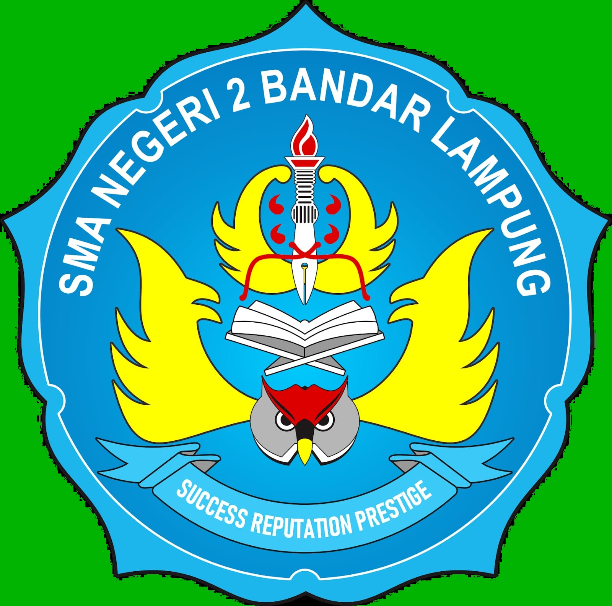
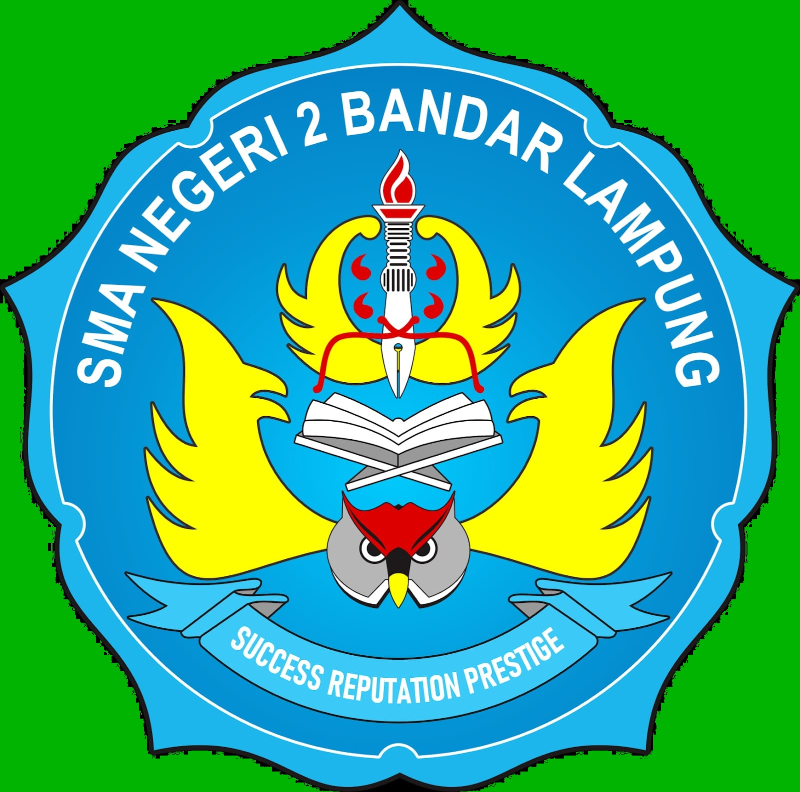

ISONAR
(IoT System for Organic and Non-Organic Waste Sorter) as An Innovative Automated Solution for River Cleanliness and Ecosystem Protection
Saaliha, F.N., Albab, M.H.R.U., Al-Farizi, A., Qonita, K., Omnikatsuo, M.M.
KARYA ILMIAH REMAJA
SMA Negeri 2 Bandar Lampung
 

ISONAR
(IoT System for Organic and Non-Organic Waste Sorter) as An Innovative Automated Solution for River Cleanliness and Ecosystem Protection
Saaliha, F.N., Albab, M.H.R.U., Al-Farizi, A., Qonita, K., Omnikatsuo, M.M.